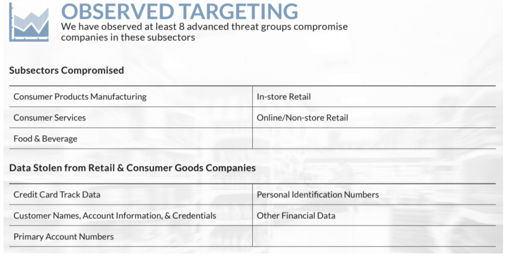
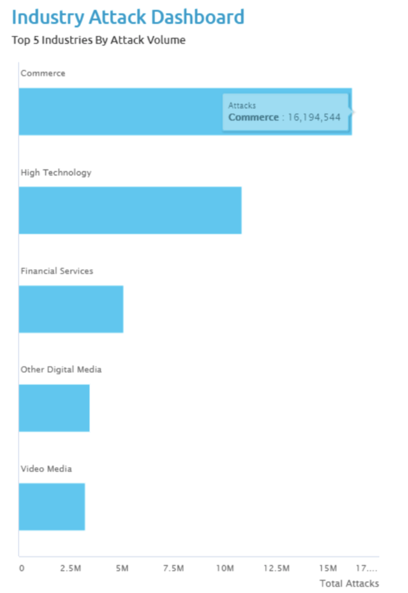

Relevant Global Threat Trends
Cyberthreats Targeting The Retail Industry:
- Phishing
- Malware
- EMV Skimming
- Digital Skimmers
- Weak authentication mechanisms
- 2 Factor-Authentication
- DDoS Attacks
- Third Party Exposure
- Hacktivism
- Regulation and Legislation
- Fraud
Rise Of E-Commerce Technologies Are Being Targeted Within The Retail Industry:
- Online Payments, Login Credentials
- Vulnerable to Fraud
- Account Takeovers
- False Purchases
- Identify Theft
- Blackmail
- Spreading Malware
- Other Criminal Activities
Specific Aspects That Make the Retail Industry A Highly Attractive Target:
- Customer Data (PII, Payment Information, Credentials, etc.)
- Prioritizing Customer Experience Over Cybersecurity
- Faster Purchase Transactions (Checkouts)
Business Impact:
- Reduced Profits
- Reduce Shareholder Value
- Negative Publicity
- Low Consumer Confidence
- Breach Expenses (Paid Ransoms, Fines, Penalties, Mitigations, etc.)
Threat Actors
Key People (Individuals and/or Groups) Targeting The Retail Industry:
- Enterprise-like Cybercriminals Seeking Financial Gain
- Advanced Persistent Threat (APT)
- Insider Threat


Threat Trend Statistics for the Retail Industry
- In 2020 Retail and Hospitality was the second most targeted industry for cyber attackers (FireEye -
Mandiant, 2021)
- In 2014-2015 the threat landscape comprised two major threat actors facing the retail industry,
organized cybercrime
seeking monetizable data, such as credit card information, and Advanced Persistent Threats (APTs)
seeking business
intelligence (FireEye, Inc., 2015) (Deloitte, 2014)
- Recent years have seen an increase in ransomware, which grew 25% from 2018-2019, and SaaS/Cloud
misconfigurations, which
rose by 80% during the same period (Accenture, 2020)
- The growth in ransomware has been dramatic increasing 432% from 2017 to 2018 (Blaine, 2018) and has
continued to grow
- Insider Threats have gone from 3% of all incidents in 2019 (Kopeck, Valentine, Wojcieszek, & Iacono,
2019) to account
for 20% of all incidents in 2020 (Leininger, 2020)
Critical Asset Identification
- People
- Customer Data (i.e., Digital marketing, analytics and shopping personalization)
- Employee Data
- Proprietary information and trade secrets
- Supplier and partner data
- Processes
- Merchandising, inventory and managing supply chain
- Technology
- Network Infrastructure
- Endpoint devices (POS, scanners, cleaning robots, employee wearables, surveillance, labeling and
barcodes)
- Software (ERP, seamless shopping including online, virtual, and physical shopping experiences)
- Server Infrastructure